1
Virtuoso Voltage Dependent Rules Flows
This topic describes three Virtuoso® voltage dependent rules (VDR) flows available in Virtuoso Layout Suite XL and higher tiers.
The complete simulation driven VDR flow lets you capture minimum and maximum voltage values from a simulation run in Virtuoso ADE and propagate the values to a layout view. They are stored in the OpenAccess database for the design and can be referenced by design rule driven (DRD) editing, the interactive wire editor, and the Virtuoso space-based router (VSR) to ensure that minimum voltage spacing constraints are honored during the physical implementation of your design. You can also use them to generate labels or markers in the layout view, which in turn can be used by tools like the Cadence® Pegasus physical verification system or Cadence PVS to verify the correctness of the implementation.
Alongside the simulation driven VDR flow, this document also covers schematic driven and layout-centric VDR flows, which let you add voltage values as properties directly on nets in a schematic or layout view. The property values are saved to the OpenAccess database for the design and can be used by DRD, the wire editor, and VSR.
This topic describes only the VDR flow and the various enhancements made to the Virtuoso Analog Design Environment and Virtuoso Layout Suite tools to support them. Links are provided to more detailed information on specific products available elsewhere in the Virtuoso documentation set.
Many foundry processes base the minimum spacing requirements between shapes on metal layers on the maximum voltage difference between those shapes. These minimum spacing requirements are defined in the technology file as minVoltageSpacing constraints, which can be used by design rule checkers and by interactive and automatic routers to ensure that the circuit designer’s intent is maintained in the physical implementation of the design.
This document describes three voltage dependent rules (VDR) flows that help automate the process and reduce the number of costly design iterations.
-
The Simulation Driven VDR Flow lets the designer capture minimum and maximum voltage values on nets derived from simulation runs in Virtuoso ADE and propagate the data to the OpenAccess layout view. Because this information is stored in the OpenAccess database, it can be used by Virtuoso tools, such as design rule driven (DRD) editing or the interactive wire editor, to verify in real time that the design is DRC correct. The Virtuoso space-based router (VSR) also considers the voltage values and avoids violating the minimum spacing rules when routing the design.
You can also use this flow to automatically create voltage labels or markers in the layout view based on the values captured during a simulation. This eliminates the need to manually annotate the layout design with voltage information, lets you visualize the voltages that apply in different areas of your design, and facilitates the use of DRC signoff tools, such as the Cadence® Pegasus physical verification system or Cadence PVS, to check that design rules are being honored and that the design is correct-by-construction.
If the schematic design is changed, you can rerun the simulation to update the voltage values in the simulation datasets and update the referenced voltage data in the layout view to take account of the changes. -
The Schematic Driven VDR Flow lets the circuit designer specify the required minimum and maximum voltage values as properties directly on the nets in the schematic, eliminating the need for guesswork on the part of the layout designer. The properties are saved in the OpenAccess schematic view and are transferred to the layout view using the usual Layout XL generation and update commands. Once in Layout XL, the values can be used by DRD, the interactive wire editor, and VSR as described above.
- The Layout-centric VDR Flow lets the layout designer set minimum and maximum voltage values as properties directly on the nets in the layout view. This data is then saved in the OpenAccess layout view and can be used by DRD, the interactive wire editor, and VSR, as described above. You can generate voltage labels or markers for all the nets at the current level of layout hierarchy or for a set of nets selected in the Navigator assistant.
Licensing Requirements
The VDR flows require the following licenses:
- Invoking Virtuoso
-
Capturing Voltages and Saving Datasets in Virtuoso ADE
Plus one of the following:-
95510: Virtuoso Implementation Aware Design Option -
95600: Virtuoso Layout Suite EAD -
95800: Virtuoso Layout Suite EXL
You also need appropriate licenses for the simulation engines you use to generate simulation data (For example, Spectre). -
- Populating Voltages in Layout XL
For detailed information on the license requirements for Virtuoso and other Cadence tools, see the Virtuoso Software Licensing and Configuration Guide.
Types of VDR Labels
The minimum and maximum voltage values specified for each net are displayed in the canvas as labels attached to the in question. There are two types of VDR labels.
-
Generic VDR labels are generated by Virtuoso and are identified by a
CDNS_VDR_LABELproperty.
They are based on voltage data captured in simulation datasets, specified manually for nets in schematic or layout designs, or specified in a voltage information CSV file. Virtuoso reads the values from the specified source and creates labels for Vmin and Vmax values. The layer on which the label is drawn is derived from the parent net shape at create time, while the purpose is specified in the Voltage Dependent Rules form or the voltage purpose file.
During ECO, Virtuoso first deletes all existing labels and then creates a new set of labels from the updated source data. -
Constrained VDR labels can be generated by Virtuoso, or they can be created, copied, or manually edited by the user directly in the layout view.
They are created on the layer-purpose pairs defined in avoltageLabelMappingconstraint in a technology file constraint group specified by the vdrConstraintGroupName environment variable. IfvdrConstraintGroupNameis defined and the specified constraint group contains avoltageLabelMappingconstraint for at least one layer, then the constrained label flow is automatically enabled.
During ECO, Virtuoso does not delete constrained labels, but rather updates any existing labels with new values and creates any labels that are missing.
The consistency of constrained labels can be checked using the VDR Debugger. See Sanity Checking Voltage Values in Constrained Labels for information.
The two types of labels cannot be mixed in a the same design. If constrained labels are defined for layers Metal1 through Metal5 and a generic label needs to generated by VDR for Metal6, then Virtuoso issues an error.
Prerequisites for the VDR Flows
To allow DRD editing, the interactive wire editor, and Virtuoso space-based router to recognize violations of voltage dependent spacing rules, you must first specify the required minimum voltage spacing rules in the process technology file used by your design. For information, see Specifying a Minimum Voltage Spacing Constraint.
To create labels and markers in the layout view which can be used by Pegasus or PVS to verify the design, you must additionally specify the layer purposes on which voltage labels or markers are to be created. For more information, see Specifying Layers and Purposes for Generic Voltage Labels and Specifying Layers and Purposes for Voltage Markers.
If your process features nets the voltage of which must transition in phase with each other, you can also define Voltage Synced Nets constraints for the nets in question. You can then use the constraints to draw vsync shapes in the layout view and check them using the VDR Sanity Checker. For more information, see Specifying Layers and Purposes for Synced Nets.
Specifying a Minimum Voltage Spacing Constraint
The minimum spacing allowed between two wires with different voltages on the same metal layer is defined using a minVoltageSpacing constraint. The example below defines minimum voltage spacings for wire shapes on Metal1 and Metal2:
spacingTables(
;( constraint layer1 [layer2]
; (( index1Definitions [index2Definitions]) [defaultValue] )
; ( table) )
;( --------------------------------------------)
( minVoltageSpacing "Metal1"
(( "voltage" nil nil ))
(
0.0 0.38
1.8 0.39
3.3 0.4
)
)
( minVoltageSpacing "Metal2"
(( "voltage" nil nil ))
(
0.0 0.48
1.5 0.49
3.3 0.5
)
) ;spacingTables
In this example, wires on Metal1
- With voltages between 0.0V and 1.8V must be spaced at least 0.38 microns apart
- With voltages between 1.8V and 3.3V must be spaced at least 0.39 microns apart
- With voltages higher than 3.3V must be spaced at least 0.4 microns apart
For detailed information, see
Specifying Layers and Purposes for Generic Voltage Labels
By default, voltage labels are always generated on the same layer as the shape over which they are placed, but they use a different layer purpose. All specified layers and purposes must be defined in the technology file and the LPP must be set as valid in the
You control the LPPs on which labels are drawn using the following options.
-
You can limit the layers on which labels are drawn by using the vdrSetValidLayers SKILL API to specify a list of valid layers for VDR label generation. The software generates labels only for nets on one of the listed layers.Use vdrGetValidLayers to see the current list of valid layers.
-
You control the purposes on which a label is drawn by using the High Voltage Purpose and Low Voltage Purpose options on the Voltage Dependent Rules form. The defaults are
"vlo"for minimum and"vhi"for maximum voltage labels and are set using the following environment variables: -
If your process requires greater control over the specific purpose on which a label is drawn, you can define a Special Voltage LPP File, which lets you override the default layer and purpose settings.
The file is a simple text file stored at an accessible location in your file system with the format indicated below. You can specify it using the vdrLayerPurposeFile environment variable.#This is vdrLayerPurpose.map # layerName low_volt_purpose/lpp high_volt_purpose/lpp OD (ODV_low sp_low) (ODV_high sp_high) PO (POV_low sp_low) (POV_high sp_high) M1 sp_low sp_high M2 sp_low sp_high M3 sp_low sp_high
Each entry can specify a layer name and the purposes or LPPs on which to draw high and low voltage labels for that layer. You can override the layer by specifying a layer-purpose pair in the purpose or LPP column as shown in the first two rows of the example above. If the same layer is listed twice, the first entry is taken and a warning issued to indicate that subsequent mappings were ignored. If the LPP is not defined in the technology file, no label is created and an appropriate warning is issued. Wildcard (*), tab (\t), and newline (\n) characters are also supported.
See Generating Voltage Labels from Simulation Data for All Nets for more information on how to use the options.
Specifying Layers and Purposes for Voltage Markers
In the marker-based VDR flows, the voltage purpose file lists the layer-purpose pairs on which markers for different voltage values are to be created.
The file is a simple text file stored in an accessible location in your file system with the format indicated below. Tab (\t) and newline (\n) characters are also supported.
#This is volt_LPP.map
#LayerPur Metal Voltage
#-----------------------------
HVD test0 Metal1 -5
Metal1 vlo Metal1 0.0
Metal1 dummy2 Metal1 0.1
Metal1 dummy3 Metal1 0.2
Metal1 dummy4 Metal1 0.3
Metal1 dummy5 Metal1 0.4
Metal1 dummy6 Metal1 0.5
Metal1 dummy7 Metal1 0.6
Metal1 dummy8 Metal1 0.7
Metal1 dummy9 Metal1 0.8
Metal1 dummyb Metal1 1.0
Metal1 dummya Metal1 0.9
Metal1 drawing Metal1 1.5
Metal1 vhi Metal1 2.5
Each entry specifies the layer and purpose on which to create a marker based on the metal layer and voltage specified for the net in question. For example:
| If a net voltage is... | The marker is drawn on... |
See Generating Voltage Markers from Simulation Data for All Nets and Generating Voltage Markers for Manually Entered Voltages for information about how the file is specified and used.
Specifying Layers and Purposes for Synced Nets
Some advanced node processes feature the concept of synchronized (or synced) nets, for which voltage values must always transition in phase. The voltage difference that triggers a DRC violation for the synced nets is lower than in mature node processes.
The ICADVM20.1 release supports the enhanced voltage check by allowing you to tag pairs of nets as synced using a Voltage Synced Nets constraint in the schematic, and to specify in the process technology file the layer-purpose pairs on which to draw shapes for the nets in the layout view. For example:
-
To specify that the synced net delta voltage calculation should be performed for nets on a single layer (for example,
M1), use the voltageLayerMarkerMapping constraint to specify that shapes are drawn for synced nets on layerM1and purposevsync:
Shapes are drawn on the specified layer and purpose provided at least one of the following constraints is defined in the technology file for the layer in question:(voltageLayerMarkerMapping"M1"layer"M1"purpose"vsync") -
If the synced nets in the constraint are on two different layers, you need to specify on which layer the marker should be drawn. For example, for synced nets on layers
MDandPO, you can use the voltageLayerPairMarkerMapping constraint to specify that markers are drawn on layerMDand purposevsyncas follows:(voltageLayerPairMarkerMapping "MD" "PO" 'layer "MD" 'purpose "vsync" )
Shapes are drawn on the specified layer and purpose provided at least one of the following constraints is defined in the technology file for the layer in question:
See the Virtuoso Technology Data Constraints Reference for more information on these constraints.
You can then use the VDR synced nets flow to generate the required marker shapes in the layout view. When DRD detects shapes on the specified LPPs it automatically applies the synced delta voltage calculation for the nets in question. See Defining and Checking Voltage Synced Nets for more information.
Simulation Driven VDR Flow
The simulation driven VDR flow automates the creation of voltage labels or markers in the layout by leveraging the voltage values derived from simulations run in Virtuoso ADE. The flow comprises the following steps:
- Setting Up Testbenches and Corners in Virtuoso ADE
- Enabling Voltage Capture in Virtuoso ADE
- Running Simulations and Capturing Voltage Data
- Populating Voltages and Generating Labels or Markers
For more information about how you can view voltage information in canvas info balloons, use DRD editing to report when minimum spacing rules are violated during interactive editing, and how you can write your own SKILL procedures to exclude transient spikes during simulation runs, see the following topics:
- Showing Voltage Information in Info Balloons
- Checking for Voltage Dependent Spacing Violations using DRD
- Customizing the Voltage Calculation
Setting Up Testbenches and Corners in Virtuoso ADE
Open your design in Virtuoso ADE and set up tests and corners for simulation. These define a combination of variables or process models to describe a scenario in which you want to measure the performance of your design. See the following topics in the Virtuoso ADE Explorer User Guide and Virtuoso ADE Assembler User Guide for more information:
When you have completed the tasks, your design is ready to run simulations in Virtuoso.
Enabling Voltage Capture in Virtuoso ADE
When your testbenches and corners are in place, you need to enable voltage capture for the design under test. To do this:
-
In the Virtuoso ADE window, choose EAD — Setup from the menu bar.
The EAD Setup form appears.
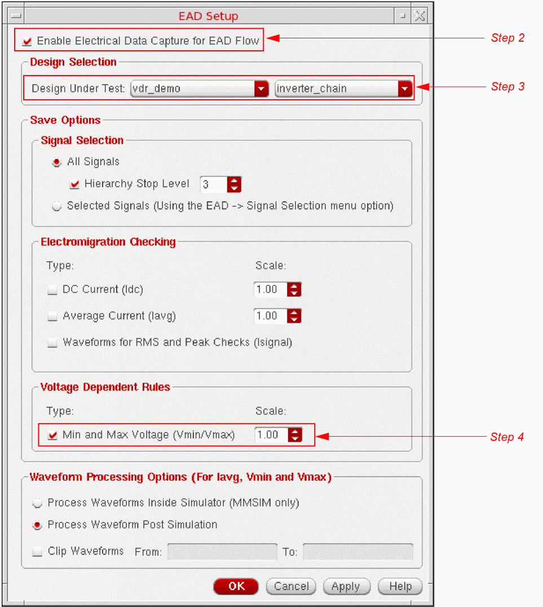 - Ensure that Enable Electrical Data Capture for EAD Flow is selected at the top of the form.
- Choose the required Design Under Test in the Design Selection group box.
-
Check the Min and Max Voltage (Vmin/Vmax) option in the Voltage Dependent Rules group box to capture minimum and maximum voltage values during the simulation run.
If needed, use the Scale option to specify a multiplier by which the voltage data is scaled before it is transferred to the layout view. The default is 1.00, which means that voltage data is not scaled. - Click OK to accept the settings and enable voltage capture.
For more information on the other options available in the EAD Setup form, see
Running Simulations and Capturing Voltage Data
After specifying the test and corner details, enabling voltage capture by EAD, and specifying any custom calculation you need, click Run Simulation on the Run toolbar in Virtuoso ADE to run the simulation and display the results on the Results tab. You can now view the voltage data in the results and create datasets that can be transferred and used in Layout XL. The following sections describe how to view the voltage data from the simulation results and how to create datasets that can be transferred to the layout view.
Viewing Voltage Data
The voltage data for the selected nets is saved in the testbench results. To view the data:
-
Ensure that the correct results history is loaded.
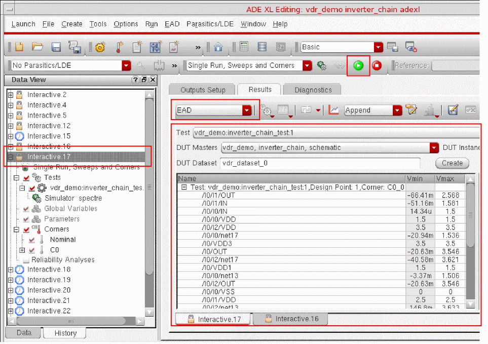 -
Select the EAD view on the Results tab of the Design Environment XL window.
The EAD view appears.
By default, the data for the first test, first design point, and the first corner in the Virtuoso ADE results database is shown in the Results Table:
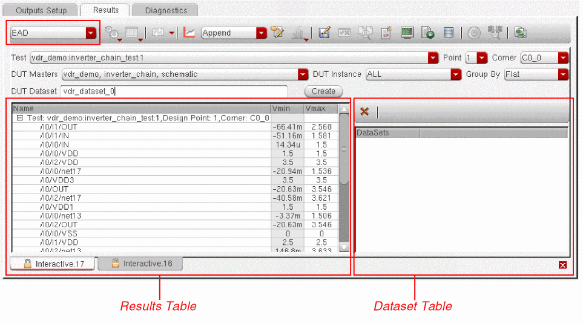The test name, design point number, and the corner name are displayed in the title of the result tree node:
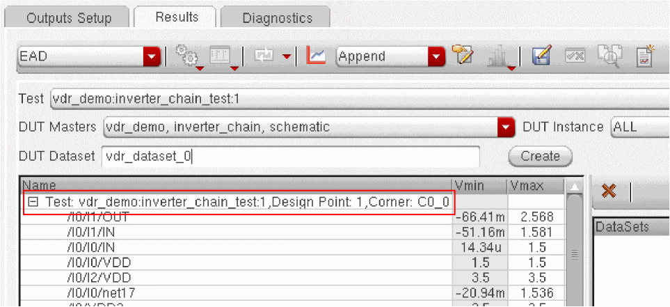You can filter the results by changing the values in the various drop-down lists shown above the Results Table.
For more information, see
Creating Datasets for the Voltage Data
To reference the voltage data in the layout view, you must first save the information into voltage datasets that can be transferred to and referenced by Layout XL.
To save the voltage data in a dataset:
-
Specify a name for the dataset in the DUT Dataset field and click Create.
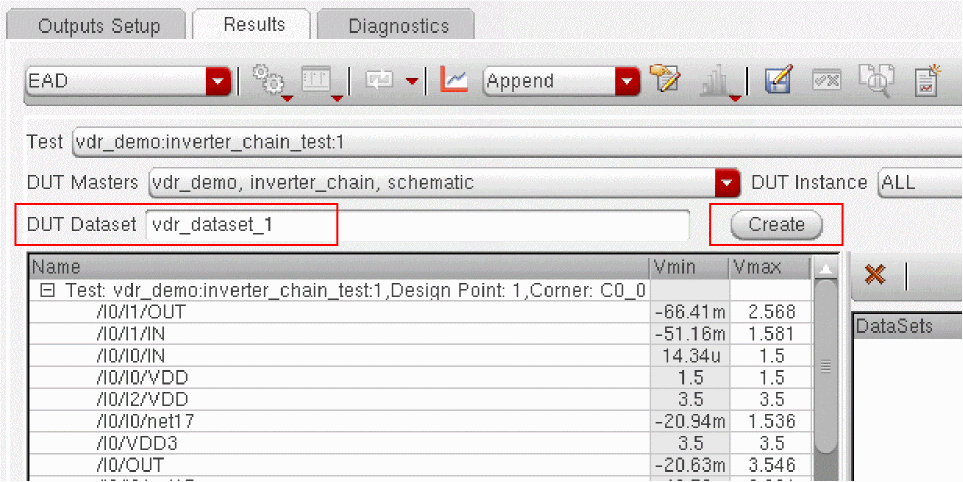Virtuoso ADE creates a new dataset with the specified name and saves it in the constraint view for the design.If both current and voltage capture are enabled in the EAD Setup form, Virtuoso ADE creates two different datasets, one each for current measurements and voltage measurements. It appends “For more information on creating datasets, see Creating Datasets for the Current Data in the Virtuoso Electrically Aware Design Flow Guide._I” to the dataset that contains current data and “_V” to the dataset that contains voltage data. -
You can view the datasets for a design in the Dataset Table in the EAD results view, as shown below.
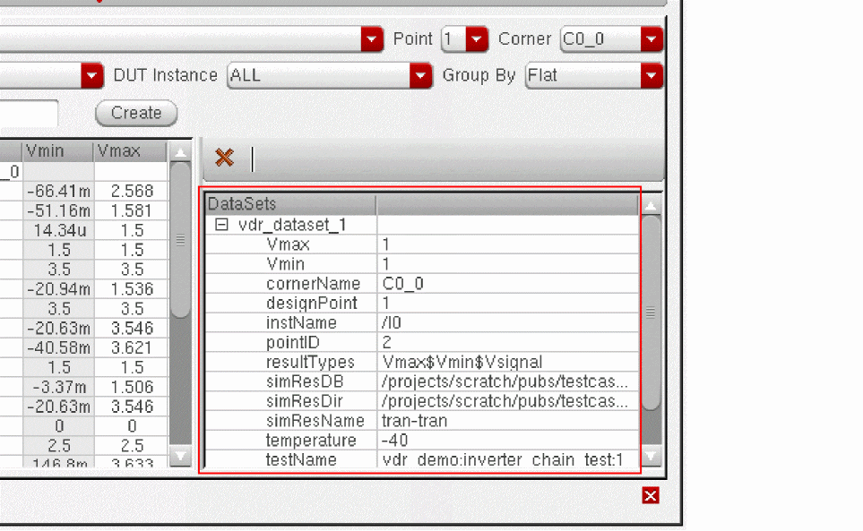 -
Expand the dataset to view details of the test name, corner name, voltages, temperature values, and more.
For more information, including alternative methods of viewing the contents of datasets, see Viewing Datasets in the Virtuoso Electrically Aware Design Flow Guide.
Populating Voltages and Generating Labels or Markers
To reference the datasets created during the simulation runs and generate corresponding voltage labels or markers for all the nets in the layout design, use the Tools – Voltage Dependent Rules – Create Labels/Markers From Simulation Voltages command.
- Use the options in the Simulation Datasets and Mode group boxes to propagate the minimum and maximum voltages to the OpenAccess database for the layout design. This makes the voltage data available to layout editor tools such as design rule driven (DRD) editing, the interactive wire editor, and the Virtuoso space-based router, which help ensure that the minimum voltage spacing constraints defined in the technology file are honored. See Storing Voltages in the OpenAccess Database for more information.
-
Use the options in the Voltage Labels group box to generate voltage labels for all nets in the layout design. the labels can then be used by DRC sign-off tools such as Pegasus or PVS to check that the minimum voltage spacing rules are met. See Generating Voltage Labels from Simulation Data for All Nets for more information.
Alternatively, if required by your process, you can use the options in the Voltage Markers group box to generate voltage markers for all nets in the layout design. See Generating Voltage Markers from Simulation Data for All Nets for more information. - Use the common options at the bottom of the form to specify for which nets labels or markers are to be generated and how far down the hierarchy to search for those nets.
Storing Voltages in the OpenAccess Database
To propagate the minimum and maximum voltage values from the datasets to the OpenAccess database for the layout design:
- Open the layout design in Layout XL.
-
Choose Tools – Voltage Dependent Rules – Create Labels/Markers From Simulation Voltages from the layout window menu bar.
The Voltage Dependent Rules form appears.
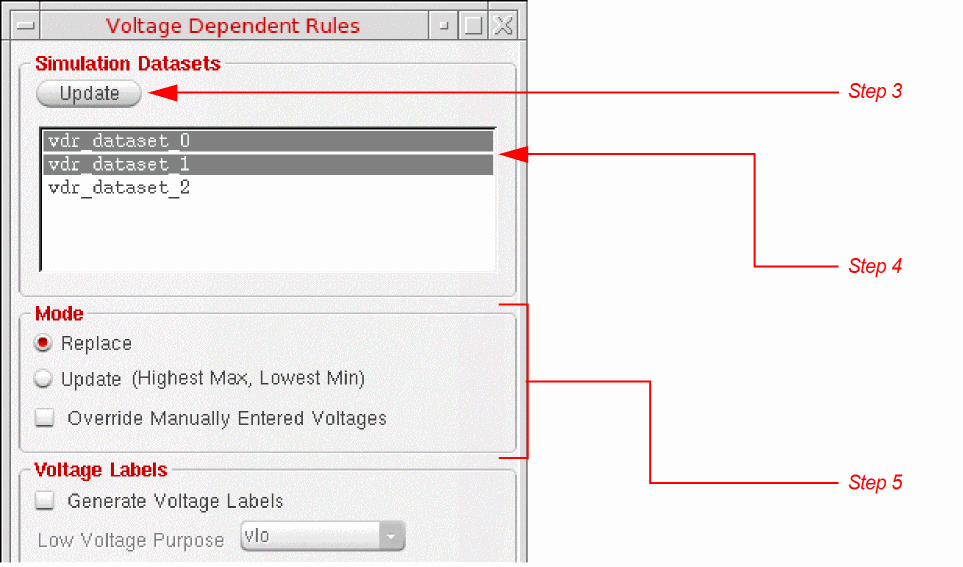 - (Optional) Click Update to transfer all the latest voltage dataset information from Virtuoso ADE. This is important if simulation data has changed since it was last referenced by Layout XL.
- Choose the datasets containing the data you want to use from the list.
-
Choose the Mode you require:
-
Replace the minimum and maximum voltage values for the nets in the selected datasets. This is the default.
- Update the minimum and maximum voltages for the nets in the selected datasets, but only if the minimum voltage value specified for the net is lower than the value currently in the design and the maximum value specified for the net is higher than the voltage currently in the design.
Use Override Manually Entered Voltages to override any voltage values that were entered manually on nets using the Property Editor assistant in VLS or VSE (and then propagated to the layout by using Generate All From Source).By default, the option is switched off and user-specified voltages are not overridden. The only exception is if you set both minimum and maximum voltages to 0 manually in the Property Editor assistant and then generate labels directly from the Navigator using these values. Those labels will be overwritten if you subsequently run the simulation-driven flow (provided the dataset you use contains values for the nets in question and even if Override Manually Entered Voltages is switched off). -
Replace the minimum and maximum voltage values for the nets in the selected datasets. This is the default.
-
Click OK to populate the minimum and maximum voltages on nets in the OpenAccess database.
You can view the voltages in the Property Editor assistant in Layout XL.
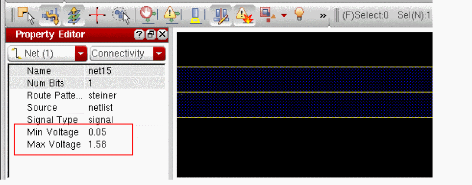Observe that no labels or markers have been generated on the net in the layout canvas yet.
Generating Voltage Labels from Simulation Data for All Nets
To generate voltage labels from simulation data for all the nets in your design:
- Choose Tools – Voltage Dependent Rules – Create Labels/Markers From Simulation Voltages to display the Voltage Dependent Rules form appears.
-
Select the datasets and mode as described in Storing Voltages in the OpenAccess Database.
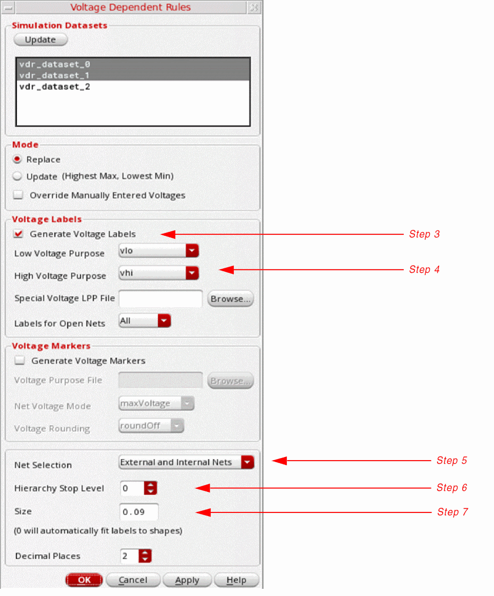 - Check the Generate Voltage Labels box to enable the controls in the Voltage Labels group box.
-
Set the layer purposes on which the voltage labels are to be drawn.
Specify a Special Voltage LPP File if you require greater control over the purposes on which labels are drawn. -
Specify the nets for which labels are to be generated. Choose between:
- External and Internal Nets to generate labels for all nets (the default).
- External Nets Only to generate labels only for nets that are connected to the terminals of the cellview to which they belong.
- Internal Nets Only to generate labels only for nets that are internal to the cellview in which they belong.
-
Specify how many hierarchy levels to search for nets on which to generate labels.
The default is 0, which means that labels are generated only for top-level nets only; 1 means top-level nets and nets located one level below in the hierarchy; and so on. -
Specify the size of the labels to be generated.
Type 0.0 to automatically size labels to match the height of the shape to which they are attached. -
Click OK to generate the specified labels.
The voltage labels for the specified nets are added in the layout canvas, with the maximum value above and the minimum value underneath it; for example:
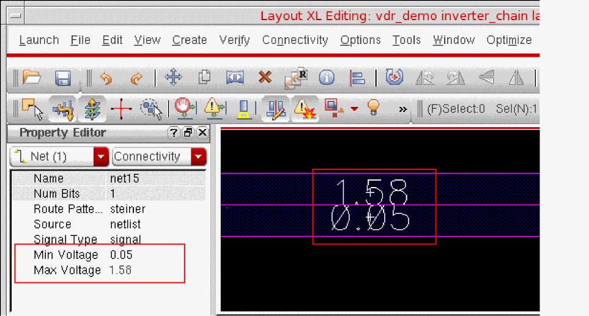Label generation depends on the Mode setting.
By default, labels are generated for a net only if geometry exists on that net. Set the vdrZeroShapeNets environment variable to also generate labels for nets on which no shapes exist. The software does not consider geometry inside parameterized cells.
Labels are also generated for individual bits of bus nets.
Mosaics are not supported.
Generating Voltage Labels from a Voltage Information File
As an alternative to using a simulation dataset, you can specify a text file with comma-separated values as an input for label generation. If the same net is listed multiple times in the file, the generated labels reflect the highest maximum and lowest minimum values specified for that net.
The following command runs label generation in Replace mode for only the top-level nets in the current cellview. Voltage values are taken from a CSV file called voltages.csv, and labels are drawn on purpose drawing. The code then automatically executes a user-defined callback named _myPostVdrCB to perform some post-processing tasks.
vdrCreateVoltageLabel(geGetEditCellView() nil "drawing" "drawing" 0.0 t nil nil t nil 0 nil "_myPostVdrCB" "./voltages.csv")
The format of the voltage information file is illustrated below.
#Net, minV, maxV
#All comments start with '#'
#Top-level Nets
AVDD, 1.0, 1.5
net15, -10, 10
net57, 1.4, 1.8
#Wildcard * is supported,
V*, 0.4, 0.5
|I1/*, -1.0, 1.0
#Hierarchical Nets
#Full hierarchical path must be specified with '/' as delimiter.
A0/A1/net31, 0.7, 0.5
|I2/VDD, -2.0, 2.0
|I0/OUT, -3.0, 3.0
#Bus Nets
|I0/VSS<1:5>, -4.0, 4.0
#Bit Nets
|I0/VSS1<10>, -4.0, 4.0
If the CSV file contains a DUT instance name before net names, the DUT instance name must be defined in the CSV header so that VDR strips off the DUT instance name before the net names to read voltage information.
# DUT_INST:/I0
#RESULT_TYPES(SCALE_FACTOR): Vmin(1),Vmax(1)
#Name,Vmin,Vmax
/I0/net15,-50.05m,1.58
/I0/net14,-65.88m,2.562
/I0/VSS,0,0
/I0/VDD3,3.5,3.5
/I0/VDD2,2.5,2.5
/I0/VDD1,1.5,1.5
/I0/OUT,-20.09m,3.543
/I0/IN,141.5n,1.5
/I0/|I2/net17,-39.46m,3.61
/I0/|I2/net13,160.2m,3.627
/I0/|I2/VSS,0,0
/I0/|I2/VDD,3.5,3.5
Generating Voltage Markers from Simulation Data for All Nets
To generate voltage markers from simulation data for all the nets in your design:
-
Choose Tools – Voltage Dependent Rules – Create Labels/Markers From Simulation Voltages from the layout window menu bar (or type
vdrGenerateLabelsGUI()in the CIW).
The Voltage Dependent Rules form appears. -
Select the datasets and mode as described in Storing Voltages in the OpenAccess Database.
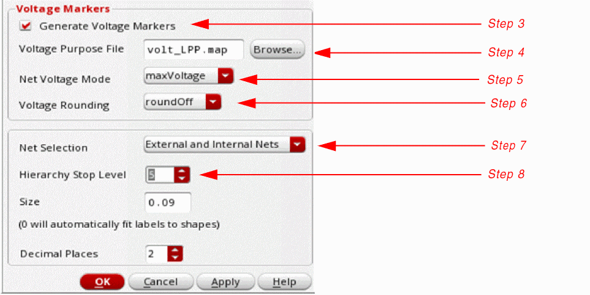 - Check the Generate Voltage Markers box to enable the controls in the Voltage Markers group box.
- Specify the location of the Voltage Purpose File, which lists the layer-purpose pairs on which markers for different voltage values are to be created. See Specifying Layers and Purposes for Voltage Markers for more information.
- Choose whether markers are to be created for maximum, minimum, or all voltage values.
- Choose the rounding rule to follow for voltage values.
-
Specify the nets for which markers are to be generated. Choose between:
- External and Internal Nets to generate labels for all nets (the default)
- External Nets Only to generate labels only for nets that are connected to the terminals of the cellview to which they belong
- Internal Nets Only to generate labels only for nets that are completely internal to the cellview in which they belong
- Specify how many hierarchy levels to search for nets on which to generate markers.
-
Click OK to generate the specified markers.
The voltage markers for the specified nets are added in the layout canvas. See Showing Voltage Information in Info Balloons to learn how to view information about each marker.
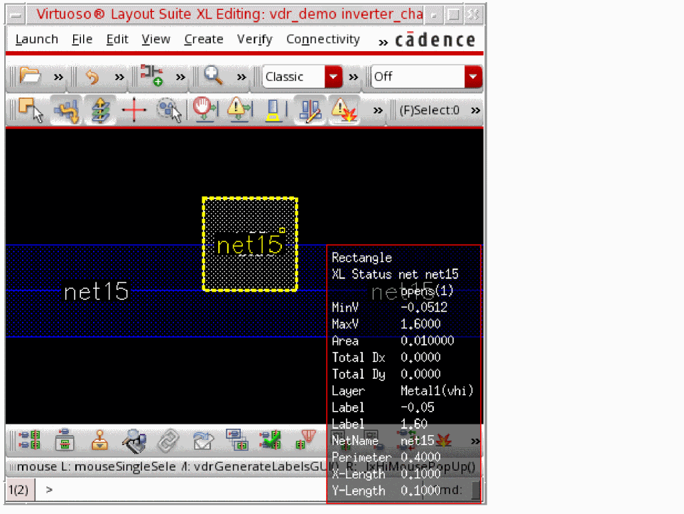Marker generation depends on the Mode setting.
Showing Voltage Information in Info Balloons
You can use the layout editor's Show Info Balloon feature to see voltage information when you move the mouse pointer over nets in the layout canvas. To do this:
- From the layout window menu bar, choose Options – Dynamic Display and enable Show Info Balloon at the top of the form.
-
Make sure the MinMaxVoltages option is selected (this is the default) in the Contents pane and click OK.
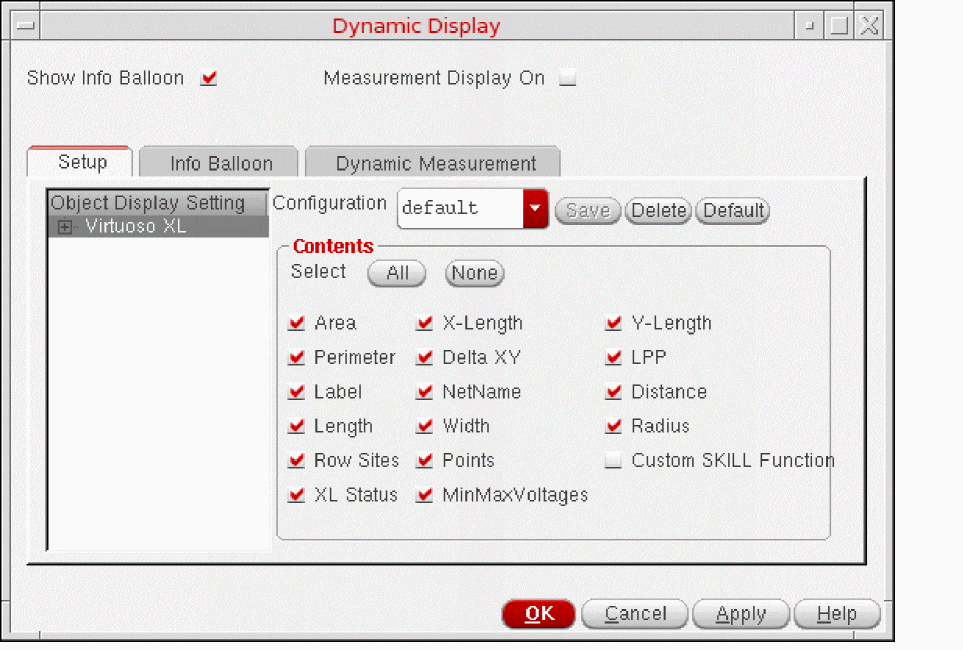 -
Move the mouse pointer over a net in your design to see an info balloon containing the voltage information for the highlighted net.
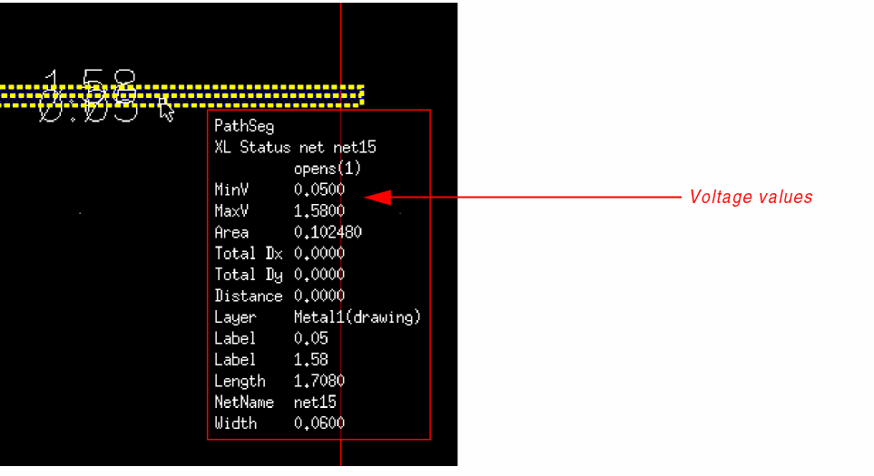 -
Move the pointer over a different net.
The original info balloon disappears and a new one opens containing information on the new net.
Checking for Voltage Dependent Spacing Violations using DRD
You can use Layout Editor features such as DRD editing to check for and report any minimum voltage spacing violations as you edit your design. To do this:
-
Choose Options – DRD Edit from the layout window menu bar.
The DRD Options form appears. -
Set Notify to display interactive notifications of violations as they occur.
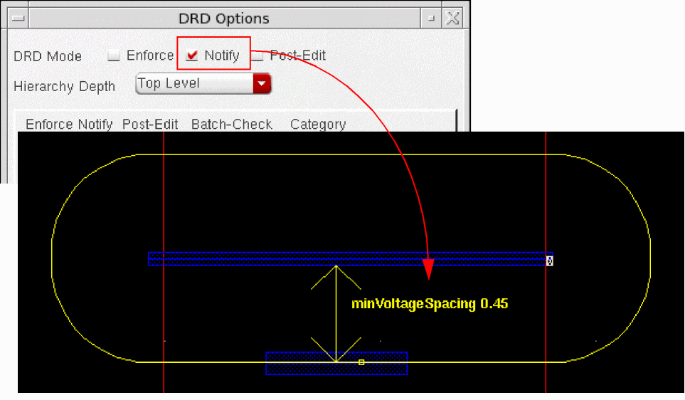If you violate the minimum voltage spacing rules during interactive editing, the system provides immediate visual feedback on the layout canvas. -
Set Post-Edit to see violation markers on the canvas and Annotation Browser assistant after you have finished editing.
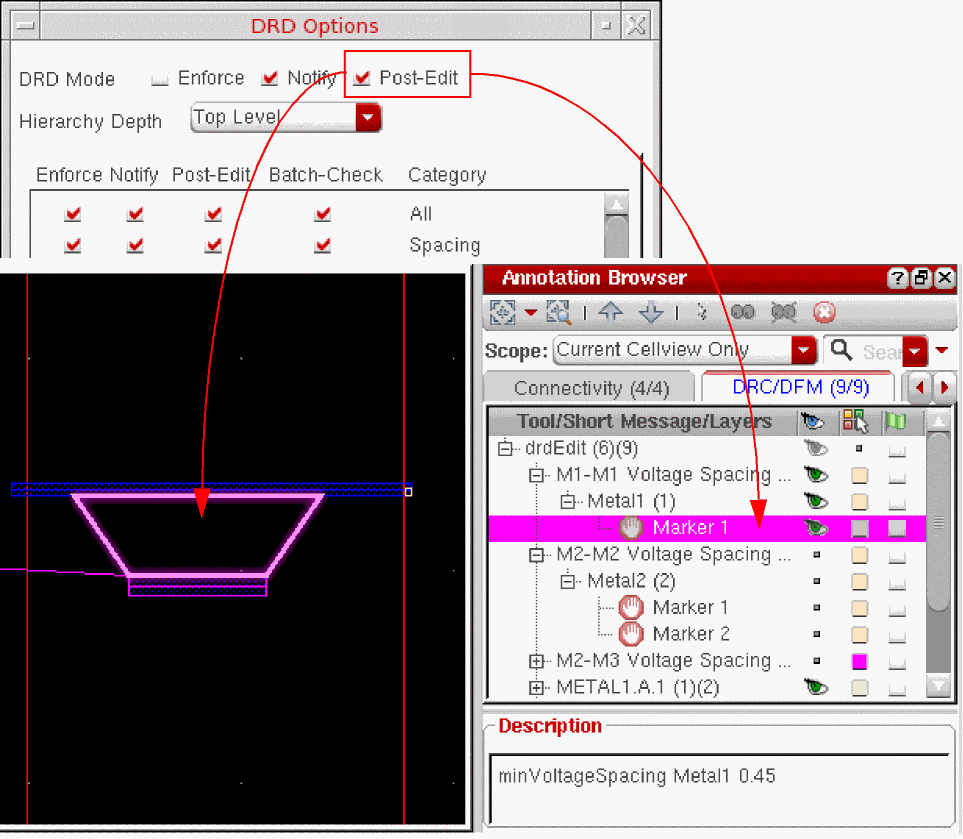
For detailed information on design rule driven layout editing, see the Virtuoso Design Rule Driven Editing User Guide.
Customizing the Voltage Calculation
Voltage values captured during a transient simulation can sometimes contain short pulses (spikes) that distort the final result. You can exclude these spikes from the final voltage calculation by writing your own custom SKILL procedures to perform the required filtering operations on the voltage waveforms before the minimum and maximum voltage values are extracted. To do this:
-
Write two custom SKILL procedures, one for the calculation of Vmax and one for the calculation of Vmin, which define the filtering you need.
The basic structure of the procedures is as indicated below:procedure( My_Vmax(w)
<perform filtering operations> <return Vmax>); end procedureprocedure( My_Vmin(w)
<perform filtering operations> <return Vmin>); end procedure -
Assign the custom SKILL procedures to the environment variables indicated below by typing the following in the CIW:
envSetVal("elec.gui" "customVmaxCalc" 'string "My_VMax")
envSetVal("elec.gui" "customVminCalc" 'string "My_VMin")
For details of these variables, see customVmaxCalc and customVminCalc in the Virtuoso Electrically Aware Design Flow Guide. -
Switch on the custom voltage calculation feature by typing the following in the CIW:
envSetVal("elec.gui" "enableCustomVminVmaxCalc" 'boolean t)
For details of this variable, see enableCustomVminVmaxCalc in the Virtuoso Electrically Aware Design Flow Guide. -
Run a transient simulation with voltage capture enabled in the EAD Setup form.
Virtuoso replaces the standard voltage calculation with the procedures defined in the custom SKILL procedures.
Schematic Driven VDR Flow
You can also populate the OpenAccess database for your layout design with voltage data by manually entering the minimum and maximum voltages as properties on the nets in the schematic.
When you generate or update your layout view from the schematic, the voltage values are propagated to the layout design and made available to DRD editing, the interactive wire editor, and the Virtuoso space-based router, which you can use to ensure that the minimum voltage spacing constraints defined in the technology file are honored.
Propagating Voltage Values from Schematic to Layout
To define voltage values in the schematic and propagate them to the layout view:
-
Launch Layout XL and open the schematic view in the Virtuoso Schematic Editor.
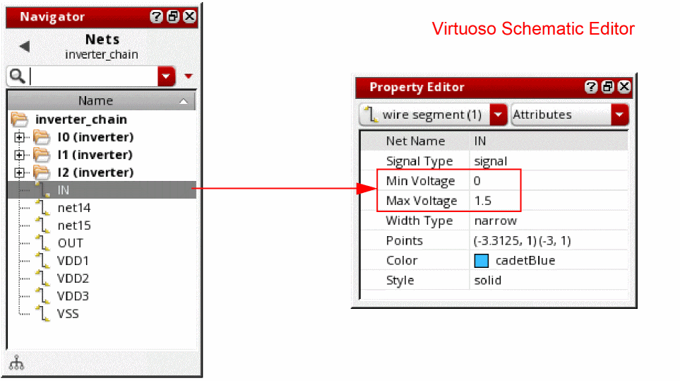 - Select the net you require in the Navigator assistant.
- Type the Min Voltage and Max Voltage values into the Property Editor assistant.
-
Choose File – Save to save the schematic the do one of the following,
- To create a new layout, choose Connectivity – Generate – All From Source from the layout window menu bar.
- To update an existing layout, see Updating Voltage Values in the Layout to Match the Schematic.
The layout view is created or updated and the new minimum and maximum voltage values are transferred from the schematic nets to the layout nets.
Layout editor tools such as DRD, the interactive wire editor, and VSR consider the voltages when checking that minimum voltage spacing constraints defined in the technology file are not being violated. See Specifying a Minimum Voltage Spacing Constraint for more information.
For information on how to generate labels or markers for these values, see
Checking Voltage Values between Schematic and Layout
You can use the Layout XL Check Against Source command to ensure that the voltage values specified in the schematic match those in the corresponding layout:
- In the layout window menu bar, select Connectivity – Check – Against Source.
-
Make sure the Connectivity option is selected in the Check Against Source form and then click OK.
Layout XL checks the schematic against the layout and reports any mismatches found:
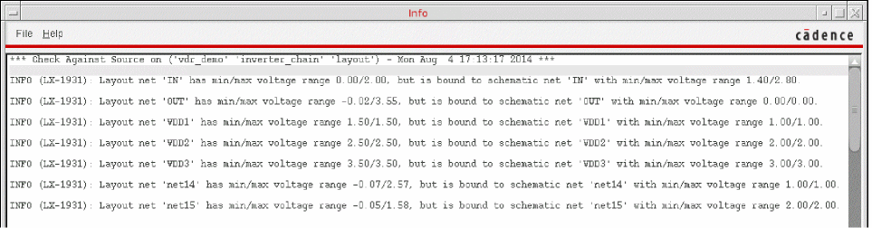
Updating Voltage Values in the Layout to Match the Schematic
To update the values in the layout to match those in the schematic:
- Choose Connectivity – Update – Components And Nets from the layout window menu bar.
-
Ensure the Update Net MinV/MaxV option is selected, and click OK.
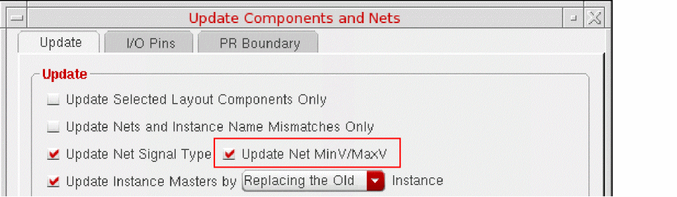The layout view is updated with the minimum and maximum voltage values from the schematic nets and any existing voltage labels for that net in the layout canvas are updated automatically.
nil in your .cdsenv file.Backannotating Voltage Values from Layout to Schematic
When working on the physical implementation of your design in Layout XL, it might be necessary to update the voltage values for certain nets to meet specific design requirements. To update the voltage values in the schematic to match those in the layout:
-
Choose Connectivity – Back Annotate – Net MinV/MaxV from the layout window menu bar.
Layout XL backannotates the minimum and maximum voltage values for all the top-level nets in the layout to the corresponding nets in the schematic.
If you have set different minV/maxV value pairs on the different bits of a layout bus and the corresponding schematic bus is not expanded, then Layout XL takes the highest maximum voltage value and the lowest minimum voltage value across all the bits of the layout bus and backannotates that minV/maxV value pair to the corresponding unexpanded bus in the schematic.
Sanity Checking Voltage Values in Constrained Labels
You can use the VDR Sanity Checker to check constrained VDR voltage labels in the layout view against the values stored in the schematic or layout net properties and report any discrepancies between them. Missing labels, labels with value differences greater than a specified tolerance, and multiple labels with different values on a single net are reported either in a user-specified log file or printed in the CIW and listed in the Annotation Browser.
The constrained VDR label sanity check flow is illustrated below.
Establishing the Net Association
The label-net association for constrained labels is established by searching the design for a net shape that overlaps the label shape in question.
- If a net shape is found at the top level, Virtuoso reads the net name from that shape.
- If no net shape is found at the top level, Virtuoso traverses the hierarchy to establish if there is an underlying terminal or pin shape inside the instance and, if so, makes the association to the top-level net connected to that terminal or pin shape.
- If a non-terminal/non-pin net shape is found one level down the hierarchy, or any net shape is found at two or more levels down the hierarchy, the label is ignored on the assumption that it is intended for some hierarchical net.
- If no overlapping net shape is found in the design, including cases where the label is created on a via layer and does not overlap any net, the label is tagged as floating.
Types of Violations
Performing a Label Sanity Check
To perform a sanity check of constrained VDR labels:
-
Specify the vdrConstraintGroupName environment variable before you launch Virtuoso.
The specified constraint group must contain a validvoltageLabelMappingconstraint to specify the layer-purpose pair on which labels are drawn. -
Choose Tools – Voltage Dependent Rule – Sanity Checker from the layout window menu bar.
The VDR Sanity Checker form appears.
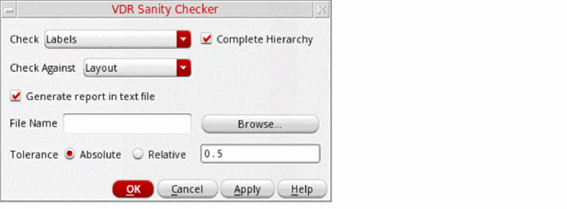 - From the Check drop-down list, select Labels.
-
Select the Complete Hierarchy check box to perform checks on the complete hierarchy. If you do not select this check box, checks are performed only on the current hierarchy.
- From the Check Against drop-down list, specify whether to check against the voltage values stored in the schematic, layout, CSV file, or dataset.
-
Specify a tolerance within which any differences are ignored.
You can also specify whether the tolerance value is absolute or relative to the voltage. -
Specify whether the results are to be captured in a text file and click OK to perform the sanity check.
When you capture the results in a log file, only a summary message is printed in the CIW. If you do not specify a log file, discrepancies are reported in a table printed in the CIW. In both cases, the format is similar to that shown below. Values are rounded to two decimal places before comparison.======================================================================= NetName Net Voltage Values Label Voltage Values (Vmin) (Vmax) (Vmin) (Vmax) ======================================================================= net15 (-0.05) (1.57) (0.05) (1.75) net14 (1.25) (2.56) (1.15) (2.35) =======================================================================
Corresponding markers are drawn on the canvas and entries are displayed on the Misc tab in the Annotation Browser assistant. When you select a violation in the assistant, Virtuoso zooms to the marker in question on the canvas.
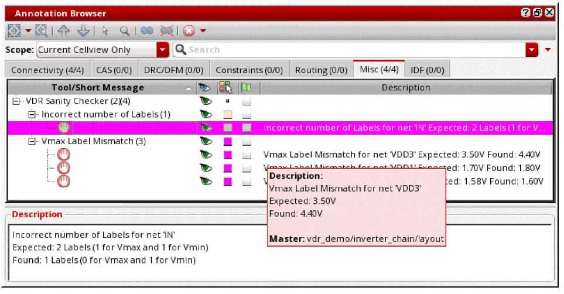In ICADVM20.1 EXL, entries for these markers are displayed on the VDR tab instead of Misc tab in the Annotation Browser.
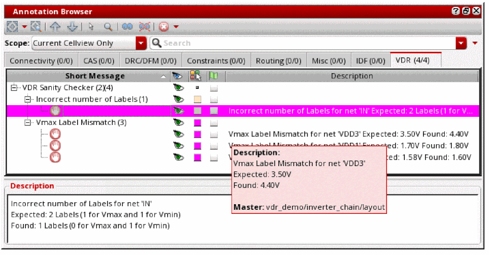You can also run the sanity check procedurally using the vdrRunSanityChecker SKILL API.
When analyzing sanity checker output, keep the following in mind:
- Zero Voltage Nets specified by the user during label generation are ignored by the sanity checker provided there are either no labels at all on the specified net or both Vmin and Vmax values are set to 0. If one or both values is nonzero, or the number of labels is other than 0 or 2, the sanity checker reports an error.
- Where there is no geometry for a net on the canvas, and labels have been generated on all the Pcell and instance terminals connected to the net, there could be multiple discrepancies related to incorrect numbers of labels or label mismatches. The sanity checker reports such discrepancies in terms of both instance name and net name to allow them to be easily identified.
- Sanity Checker reports VDR objects (voltage labels, voltage markers, VSync shapes, and Userdv shapes) found inside the shared cells. This helps in reminding users to delete these VDR objects from shared cells.
- Sanity Checker does not perform any checks on existing VDR labels inside the shared cells.
Related Topics
Rules for Creating Voltage Labels in Shared Cells
Defining and Checking Voltage Synced Nets
Some processes feature the concept of synced nets, the voltages of which must always transition in phase with each other. The voltage difference that triggers a DRC violation for synced nets is much lower than in conventional processes. To support the enhanced voltage check, you can:
- Define Voltage Synced Nets constraints in the schematic for the nets whose voltages must transition in phase.
-
Generate vsync shapes connecting these synced nets in the layout view.
- Use the VDR Sanity Checker to check that the vsync shapes match the constraints in the layout.
Creating a Voltage Synced Nets Constraint By Using the Constraint Manager (ICADVM20.1 EXL Only)
To create a Voltage Synced Nets constraint using the Constraint Manager:
- Select the pair of nets to be tagged as synced in the schematic Navigator assistant.
-
In the Constraint Manager assistant, choose Voltage Synced Nets from the toolbar:
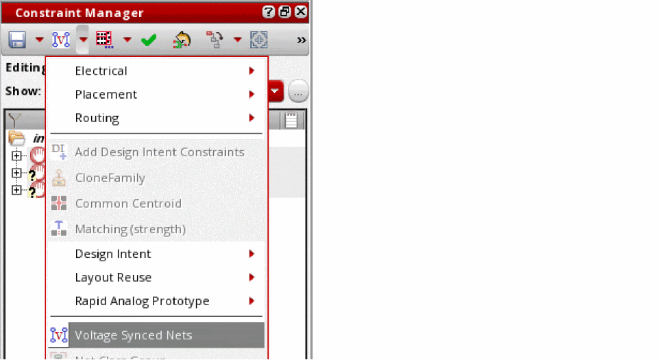The Voltage Synced Nets constraint is created on the selected nets.
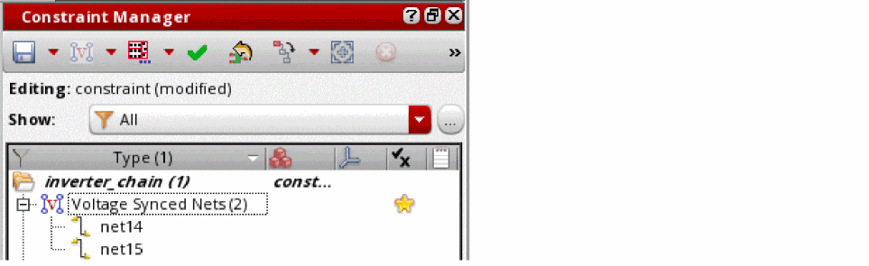See Voltage Synced Nets in the Virtuoso Unified Custom Constraints for more information about the constraint.
Creating Voltage Synced Nets Constraints from a File (ICADVM20.1 EXL Only)
You can also create Voltage Synced Nets constraints from a comma-separated file capturing the nets to be constrained and the minimum and maximum voltages for those nets. Each line in the file creates a Voltage Synced Nets constraint with members as defined by the comma-separated nets captured in that line. To do this:
-
Choose Tools – Voltage Dependent Rules – VSync Visualizer from the layout window menu bar.
The VSync Constraints Visualizer form appears.
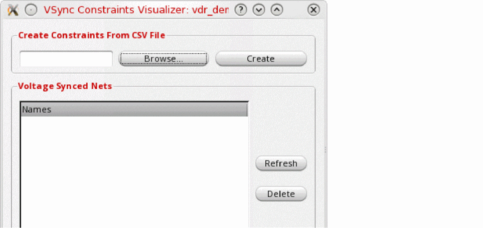 - Browse to the location of the file you require and click Create to create constraints from the information in that file.
- (Optional) Click Refresh to update the list of voltage synced nets currently in the design.
-
(Optional) Click Delete to remove the selected voltage synced nets from the design.You can perform the same operation procedurally using the vdrCreateVSyncConstraintsFromFile SKILL API.
Generating Vsync Shapes in the Layout View (ICADVM20.1 EXL Only)
To generate vsync shapes in the layout view:
-
Choose Tools – Voltage Dependent Rules – Create VSync Shapes from the layout window menu bar.
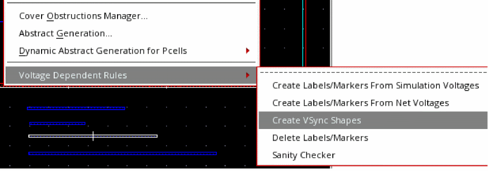If the vdrConstraintGroupName environment variable is not set, the menu item is grayed out.Virtuoso removes all existing vsync shapes created by the tool and generates one vsync shape for each pair of nets tagged in a Voltage Synced Nets constraint in the layout view.- For pairs of nets on the same layer, the vsync shapes are created on the layer and purpose defined in the voltageLayerMarkerMapping technology file constraint.
- For pairs of nets on different layers, the vsync shapes are created on the layers and purposes defined in the voltageLayerPairMarkerMapping technology file constraint.
- If there are multiple possible layers on which the shapes could be created, the vsync shapes are created on the lowest layer to preserve routing resources on higher metal layers.
See Specifying Layers and Purposes for Synced Nets for more information.
Checking Synced Nets in the Layout View (ICADVM20.1 EXL Only)
You can use the VDR Sanity Checker to check that each vsync shape on the canvas corresponds to a Voltage Synced Nets constraint in the layout.
- In the layout window, choose Connectivity – Update – Layout Constraints to transfer the constraints from the schematic view to the layout view.
-
Choose Tools – Voltage Dependent Rules – Sanity Checker from the layout window menu bar.
The VDR Sanity Checker form appears.
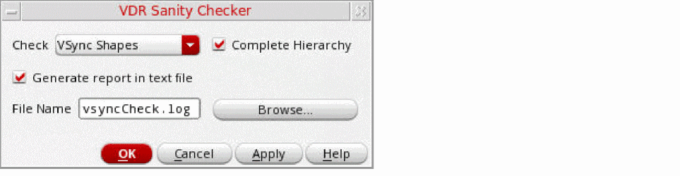 -
Select VSync Shapes from the Check drop-down list.
- Select the Complete Hierarchy check box to perform checks on the complete hierarchy. If you do not select this check box, checks are performed only on the current hierarchy.
-
Select the Generate report in text file check box to captured results in a text file.
When you capture the results in a log file, only a summary message is printed in the CIW. If you do not specify a log file, discrepancies are reported in a table printed in the CIW. -
Click OK to check the vsync shapes in the design.
Two types of errors are reported:-
Vsync shapes with no corresponding Voltage Synced Nets constraint in the layout.
Markers for this violation type are created on the vsync shape in the layout view. The text report prints the bounding box of the vsync shape. -
A Voltage Synced Nets constraint exists in the layout, but there is no corresponding vsync shape.
Markers for this violation type are created on the corresponding cell to reduce visual clutter on the canvas. The description in the Annotation Browser provides the names of the nets in the constraint. The text report captures the constraint name and its member nets.
-
Vsync shapes with no corresponding Voltage Synced Nets constraint in the layout.
Creating Delta Voltage Constraints between Nets
You can create a Delta Voltage constraints between nets by using either the Constraint Manager assistant or the CSV file that contains information about nets and delta voltage values.
The entries for the nets and delta voltage values between them in the CSV file are as follows:
# Comma-separated nets and delta voltage values
net14, net3, 0.4
net14, net6, 0.6
net3, net6, 0.8
To create a delta voltage constraints between nets using the Constraint Manager assistant:
-
Select the pair of nets between which you want to create a delta voltage constraints in the Layout EXL or MXL. For example,
net14andnet3.
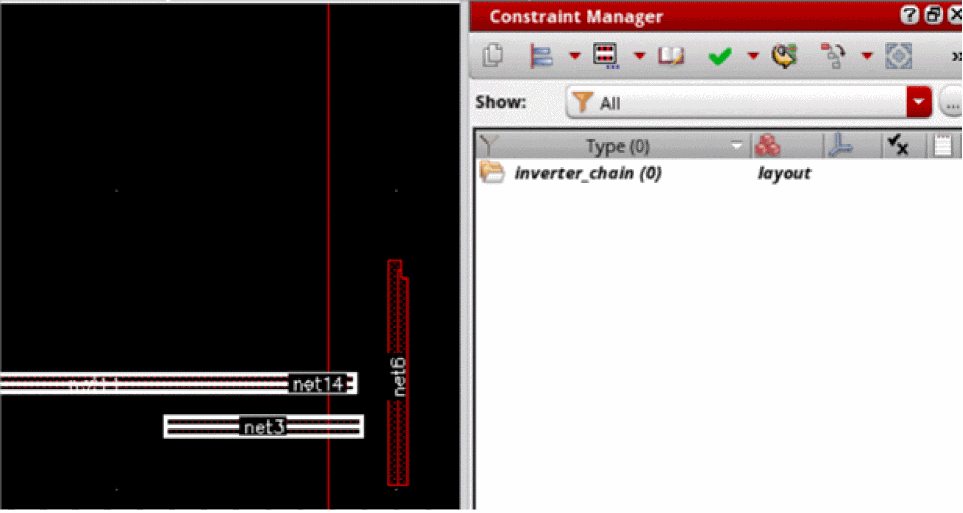 - From the toolbar of the Constraint Manager, click the arrow next to the Alignment icon to display additional options.
-
Select Electrical – Delta Voltage.
The Delta Voltage dialog box appears. -
In the Delta Voltage field, specify the delta voltage value. For example,
0.4. -
Click OK.
The delta voltage is created between the selected nets,net14andnet3with a delta voltage value of0.4(400m), as shown in the following figure.
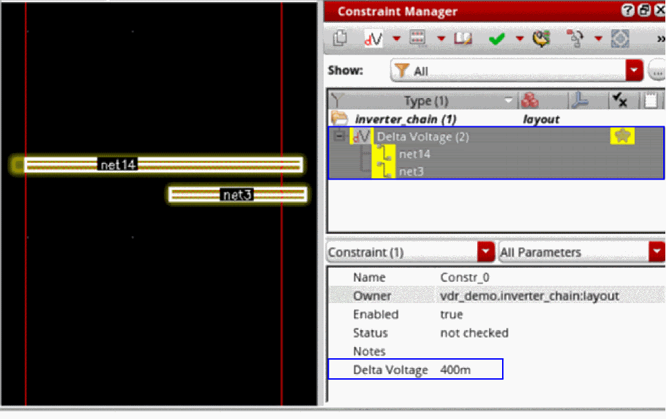
To create delta voltage constraints between the nets with the delta voltage value specified using the CSV file:
-
Open the design in Layout EXL and MXL. In this example, the library cellview is
vdr_demo/inveret_chain/layout. -
Create a CSV file that contains the information about nets and delta voltage values between them.
# Comma-separated nets and delta voltage values
net14, net3, 0.4
net14, net6, 0.6
net3, net6, 0.8
-
Save this CSV file in a directory. In this example, the CSV files is saved with the name
userdvData.csvin the current working directory. -
In the Virtuoso Studio CIW, run the following command to create delta voltage constraints using the function
vdrCreateUserdvConstraintsFromFilefrom the the information contained in the CSV file.scv = dbOpenCellViewByType(
"vdr_demo"
"inverter_chain"
"layout"
"" "r"
)
srcCache = ciCacheGet(scv)
;gives constraint cache of cellview
listOfCons = nil
foreach(elm srcCache~>constraints
when(elm~>type == 'deltaVoltage listOfCons = cons(elm listOfCons)))
vdrCreateUserdvConstraintsFromFile("vdr_demo" "inverter_chain" "layout" "./userdvData.csv")
;Creates User Delta Voltage constraints for the specified nets in the file userdvData.csv file in the library cellview: vdr_demo inverter_chain layout
The following output is printed in the Virtuoso Studio CIW and delta voltage constraints created between the nets are displayed in the Constraint Manager assistant.=> db:0x2b6dd01a
=> ci:0x3850fa80
=> nil
=> nil
=> t
=>
INFO (CMGR-5020): Created constraint of type 'deltaVoltage' in cache 'vdr_demo inverter_chain layout' with name 'Constr_1'.
INFO (CMGR-5020): Created constraint of type 'deltaVoltage' in cache 'vdr_demo inverter_chain layout' with name 'Constr_2'.
INFO (CMGR-5020): Created constraint of type 'deltaVoltage' in cache 'vdr_demo inverter_chain layout' with name 'Constr_3'.
=> t
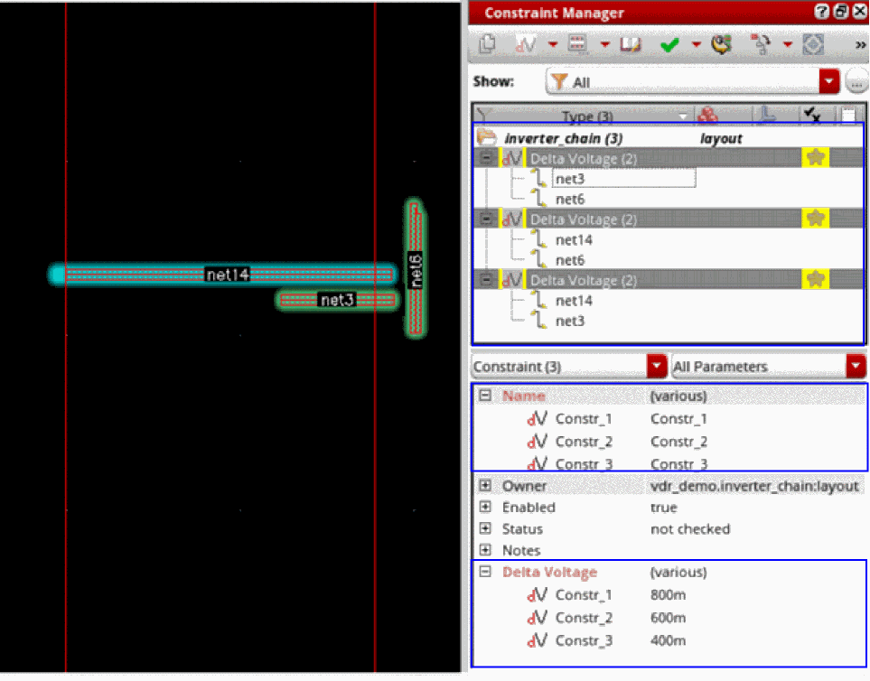
Creating Userdv Shapes in the Layout View
To create Userdv shapes between the nets constrained by the delta voltage constraints in the Layout view:
-
Create the delta voltage constraints between the nets by using the Constraint Manager assistant or by using a CSV file that contains the information about the nets and their delta voltage values.
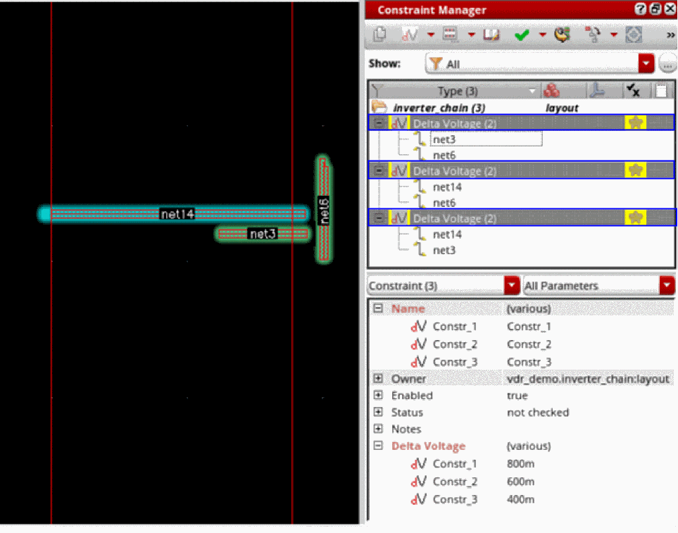 - Select the delta voltage constraints in the Constraint Manager assistant.
-
From the menu bar of Layout EXL or MXL, select Tools – Voltage Dependent Rules – Create Userdv Shapes.
The Userdv shapes between the nets constrained by the delta voltage constraints are created.
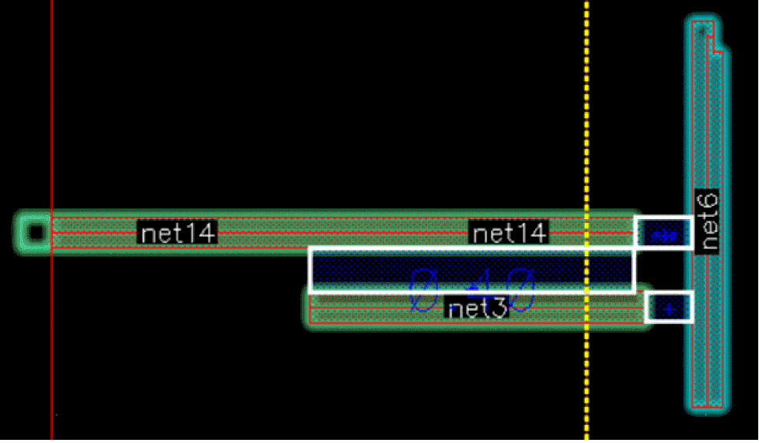The following information is also printed in the Virtuoso Studio CIW.INFO (VDR-2011): VDR annotation deleted 0 Userdv Shapes.
INFO (VDR-2000): Successfully created Userdv Shape between 'net14' and 'net3' on ('Metal1' 'vsync') for voltage 0.4 and bBox ((15.2305 3.239) (15.863 3.326)).
INFO (VDR-2000): Successfully created Userdv Shape between 'net14' and 'net6' on ('Metal1' 'vsync') for voltage 0.6 and bBox ((15.864 3.3255) (15.976 3.3845)).
INFO (VDR-2000): Successfully created Userdv Shape between 'net3' and 'net6' on ('Metal1' 'vsync') for voltage 0.8 and bBox ((15.884 3.1805) (15.976 3.2395)).
INFO (VDR-2012): VDR annotation created 3 Userdv Shapes.
=> t
Alternatively, you can also create the Userdv shapes by running the functionvdrGenerateUserdvShapesin the Virtuoso Studio CIW.vdrGenerateUserdvShapes(
scv
?verbose t
?logFile "./userdvLogFile.log"
)
;Created Userdv shapes between the nets constrained by the delta voltage constraints. The debug messages are printed in the log file userdvLogFile, which is saved in the current working directory.
The Userdv shapes are created between the nets.
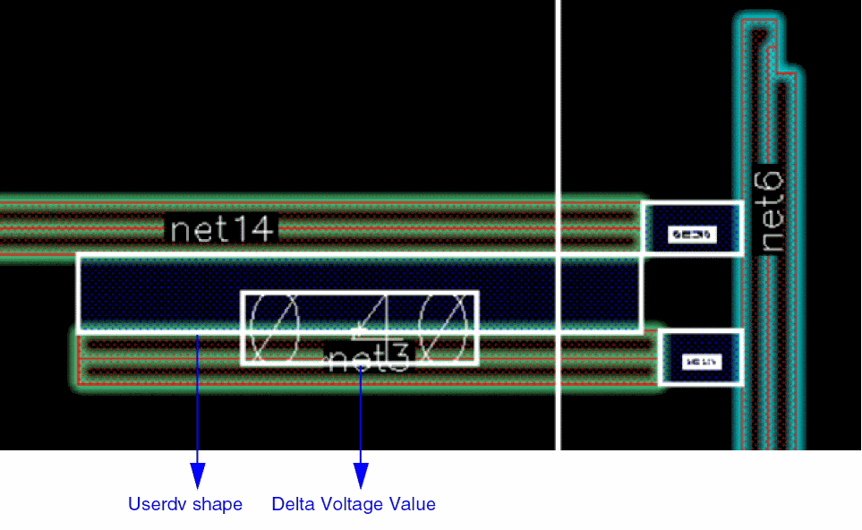The following messages, indicating the successful creation of Userdv shapes, are also printed in the Virtuoso Studio CIW.INFO (VDR-2011): VDR annotation deleted 0 Userdv Shapes.
INFO (VDR-2000): Successfully created Userdv Shape between 'net14' and 'net3' on ('Metal1' 'vsync') for voltage 0.4 and bBox ((15.2305 3.239) (15.863 3.326)).
INFO (VDR-2000): Successfully created Userdv Shape between 'net14' and 'net6' on ('Metal1' 'vsync') for voltage 0.6 and bBox ((15.864 3.3255) (15.976 3.3845)).
INFO (VDR-2000): Successfully created Userdv Shape between 'net3' and 'net6' on ('Metal1' 'vsync') for voltage 0.8 and bBox ((15.884 3.1805) (15.976 3.2395)).
INFO (VDR-2012): VDR annotation created 3 Userdv Shapes.
=> t
Checking Userdv Shapes in the Layout View (ICADVM20.1 EXL Only)
-
Choose Tools – Voltage Dependent Rules – Sanity Checker from the layout window menu bar.
The VDR Sanity Checker form appears.
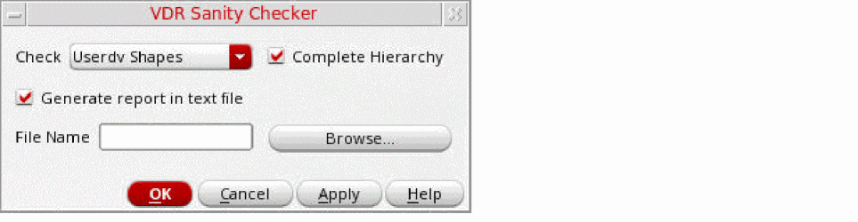 -
Select Userdv Shapes from the Check drop-down list.
- Select the Complete Hierarchy check box to perform checks on the complete hierarchy. If you do not select this check box, checks are performed only on the current hierarchy.
-
Select the Generate report in text file check box to captured results in a text file.
When you capture the results in a log file, only a summary message is printed in the CIW. If you do not specify a log file, discrepancies are reported in a table printed in the CIW. -
Click OK to check the Userdv shapes in the design.Sanity Checker reports VDR objects (voltage labels, voltage markers, VSync shapes, and Userdv shapes) found inside the shared cells. This helps in reminding users to delete these VDR objects from shared cells.Userdv shapes can also be created for out-of-context hierarchical nets.
Violations Reported by Sanity Checker for VSync and Userdv Shapes
The following violations are reported by Sanity Checker for VSync and Userdv shapes:
- Shapes are present but Sanity Checker reports them invalid:
-
Shapes are missing:
-
No parallel run length found:
Two net shapes (member nets of VSync and Userdv constraint) do not have any parallel run length where the VSync or Userdv shapes can be created.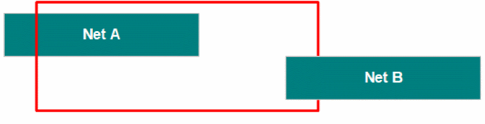 -
No empty area found:
When region between two net shapes (member nets of VSync and Userdv constraint) is completely obstructed by the other shapes.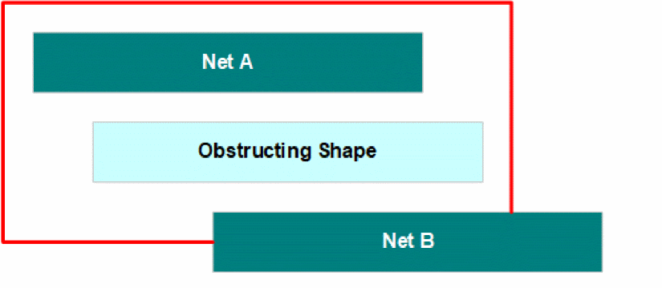 -
No shape found for corresponding nets:
No net shape is found in the design corresponding to member nets in the constraint. -
VSync net shapes far away:
When there are no other shapes within the threshold spacing from the net shape (member nets of VSync and Userdv constraint).
Threshold spacing value is calculated as the maximum value of following constraints: -
Missing shapes:
When Sanity Checker does not find a reason of why the VSync and Userdv shape are missing, the violation is reported as missing shapes.
-
No parallel run length found:
Layout-centric VDR Flow
You can also enter voltage values directly in the layout editor Property Editor assistant. The voltage values are made available to layout features such as DRD editing, the interactive wire editor, and the Virtuoso space-based router. You can then generate voltage labels or markers for all the nets at the current level of layout hierarchy, or for a set of nets selected in the Navigator assistant.
Entering Voltage Values in the Property Editor Assistant
To enter minimum and maximum voltage values for a net directly in the Property Editor assistant:
- Open the layout design in Layout XL and open the Navigator and Property Editor assistants.
- Select the net you require in the Navigator assistant.
-
Type the Min Voltage and Max Voltage values into the Property Editor assistant.
 If there are already voltage labels or markers for that net visible on the canvas, the values are automatically updated. If there are no labels or markers for that net, see Generating Voltage Labels for Manually Entered Voltages or Generating Voltage Markers for Manually Entered Voltages for information on how to create them.
If there are already voltage labels or markers for that net visible on the canvas, the values are automatically updated. If there are no labels or markers for that net, see Generating Voltage Labels for Manually Entered Voltages or Generating Voltage Markers for Manually Entered Voltages for information on how to create them. -
Choose File – Save to save the layout view.
Layout editor tools such as DRD, the interactive wire editor, and VSR consider the voltages when checking that minimum voltage spacing constraints defined in the technology file are not being violated.
See Specifying a Minimum Voltage Spacing Constraint for more information.
Generating Voltage Labels for Manually Entered Voltages
Generating Labels on All Nets
To generate labels for manually entered voltage values on all the nets at the current level of layout hierarchy:
-
Choose Tools – Voltage Dependent Rules – Create Labels/Markers From Net Voltages from the layout window menu bar.
The condensed Voltage Dependent Rules form appears containing only the options required for label and marker generation.
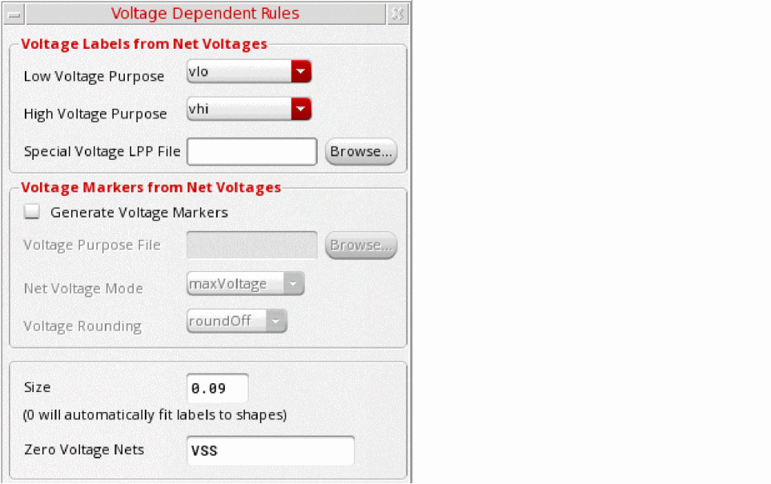 -
Set the layer purpose and size options as required.
Specify a Special Voltage LPP File if you require greater control over the purposes on which labels are drawn. -
List the Zero Voltage Nets for which labels should be generated.
By default, the field lists the nets in the design that have (0,0) voltage values and signal typeground. -
Click OK to generate voltage labels for all the nets at the current level of layout hierarchy.
The labels are generated on the geometry of the net in question. Where there is no geometry for that net on the canvas, the labels are generated on all the Pcell and instance terminals connected to the net (where such connectivity information exists).If you subsequently generate labels from simulation data, you must switch off the Override Manually Entered Voltages option to prevent these labels from being overwritten. Note, however, that if you manually set both minimum and maximum voltages to 0 in the Property Editor assistant and then generate labels using these values, those labels will always be overwritten if you subsequently run the simulation-driven flow (provided the dataset you use contains values for the nets in question). See Populating Voltages and Generating Labels or Markers for more information on the Override Manually Entered Voltages option.
Generating Labels on Selected Nets
To generate labels for manually entered voltage values on selected nets in the design:
- In the Navigator assistant, select the nets for which you want to generate voltage labels.
-
Right-click, and choose Create Voltage Labels/Markers.
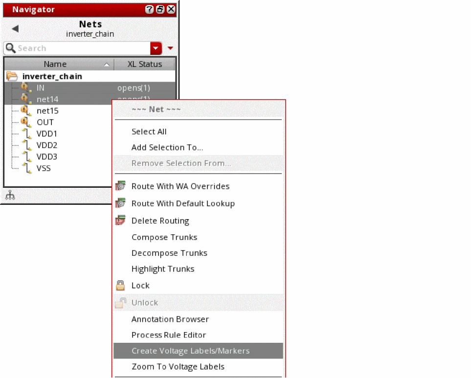 - The truncated version of the Voltage Dependent Rules form appears.
-
Set the layer purpose and size options as required.
Specify a Special Voltage LPP File if you require greater control over the purposes on which labels are drawn. -
List any Zero Voltage Nets for which labels should be generated.
By default, the field lists the nets in the selected set that have (0,0) voltage values and signal typeground. -
Click OK to create voltage labels for the selected nets in the layout canvas in line with the values shown in the Property Editor assistant.
The labels are generated on the geometry of the net in question. Where there is no geometry for that net on the canvas, the labels are generated on all the Pcell and instance terminals connected to the net (where such connectivity information exists).If you subsequently generate labels from simulation data, you must switch off the Override Manually Entered Voltages option to prevent these labels from being overwritten. Note, however, that if you manually set both minimum and maximum voltages to 0 in the Property Editor assistant and then generate labels using these values, those labels will always be overwritten if you subsequently run the simulation-driven flow (provided the dataset you use contains values for the nets in question). See Populating Voltages and Generating Labels or Markers for more information on the Override Manually Entered Voltages option.
You can also perform the same task programmatically by using the vdrCreateVoltageLabelOnNets SKILL function.
Viewing Voltage Labels in the Layout View
To view the voltage labels on a top-level net:
-
In the Navigator assistant, right-click to select the net and choose Zoom To Voltage Labels/Markers.
Layout XL zooms to the voltage labels on the selected net.
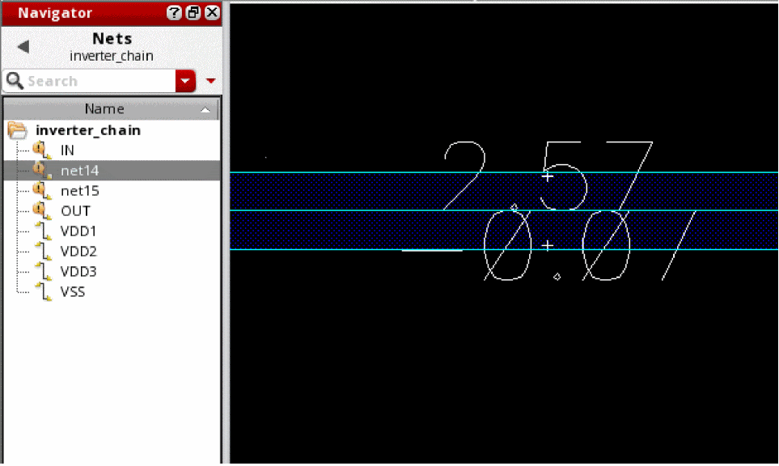
Checking Voltage Labels in the Layout View
You can use the vdrCheckVoltageLabels SKILL function to verify that all top-level nets in the specified layout cellview are correctly labeled on the canvas.
Generating Voltage Markers for Manually Entered Voltages
Some processes, especially at advanced nodes, require voltage markers to be present on predefined layers in the design. You can use the VDR layout-centric flow to create markers for all the nets at the current level of layout hierarchy, or for a set of nets selected in the Navigator assistant.
Generating Markers on All Nets
To generate markers for manually entered voltage values on all the nets at the current level of layout hierarchy:
-
Choose Tools – Voltage Dependent Rules – Create Labels/Markers From Net Voltages from the layout window menu bar.
The truncated version of the Voltage Dependent Rules form appears.
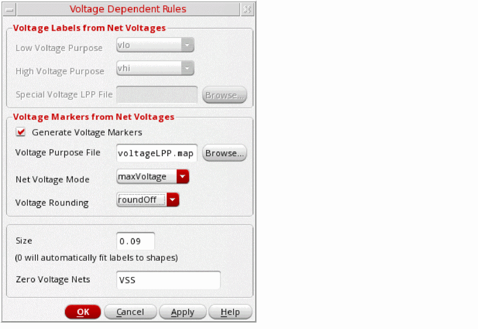 -
Check the Generate Voltage Markers box to enable the controls in the Voltage Markers from Net Voltages group box.
The Voltage Labels options are automatically disabled. -
Specify the Voltage Purpose File, which lists the layer-purpose pairs on which markers for different voltage values are to be created.
See Specifying Layers and Purposes for Voltage Markers for more information. - Choose whether markers are to be created for maximum, minimum, or all voltage values.
- Choose the rounding rule to follow for voltage values.
-
Change the Size setting if required.
-
List the Zero Voltage Nets for which markers should be generated.
By default, the field lists the nets in the design that have (0,0) voltage values and signal typeground. -
Click OK to generate voltage markers for all the nets at the current level of layout hierarchy.
The markers are generated on the geometry of the net in question.
Generating Markers on Selected Nets
To generate markers for manually entered voltage values on selected nets in the design:
- In the Navigator assistant, select the nets for which you want to generate voltage labels.
-
Right-click, and choose Create Voltage Labels/Markers.
The truncated version of the Voltage Dependent Rules form appears. - Check the Generate Voltage Markers box to enable the controls in the Voltage Markers from Net Voltages group box.
- Specify the Voltage Purpose File, which lists the layer-purpose pairs on which markers for different voltage values are to be created. See Specifying Layers and Purposes for Voltage Markers for more information.
- Choose whether markers are to be created for maximum, minimum, or all voltage values.
- Choose the rounding rule to follow for voltage values.
-
Change the Size setting if required.
-
List the Zero Voltage Nets for which markers should be generated.
By default, the field lists the nets in the design that have (0,0) voltage values and signal typeground. -
Click OK to generate voltage markers for the selected nets at the current level of layout hierarchy.
The markers are generated on the geometry of the net in question.
You can also perform the same task programmatically by using the vdrCreateVoltageMarkersOnNets SKILL function.
Post-Processing Voltage Labels and Markers
You can use the vdrPostLabelCreationCallback environment variable to specify a custom SKILL callback that can be set to perform any required post-processing tasks on VDR-generated labels. The specified callback must accept a cellview ID as an argument and is run automatically after label generation is complete.
For example, the callback shown below collects all the labels generated by the VDR flow in the specified cellview and creates a property to link them to a dataset called dataset1.
procedure(_myPostVdrCB(cv)
let((shape)
foreach(shape cv~>shapes
if(shape~>objType == "label" then
if(prop = dbFindProp(shape "CDNS_VDR_LABEL") then
dbCreateProp(shape "DataSetName" 'string "dataset1")
)
)
)
)
)
To modify the callback to post-process marker objects instead of labels, change the objType to "rect".
You can also specify the callback function name as an optional argument when using the vdrCreateVoltageLabel and vdrCreateVoltageMarkers SKILL functions.
Deleting Voltage Labels and Markers
To delete all the labels and markers generated by the voltage dependent rules flows, do one of the following:
- Choose Tools – Voltage Dependent Rules – Delete Labels/Markers from the layout window menu bar
- Call the vdrDeleteGUI SKILL function
Searching Voltage Labels for Debugging
To search and display voltage labels for debugging:
- Open the layout design in Layout XL.
-
Choose Tools – Voltage Dependent Rules – VDR Debugger from the layout window menu bar.
The VDR Debugger form opens.
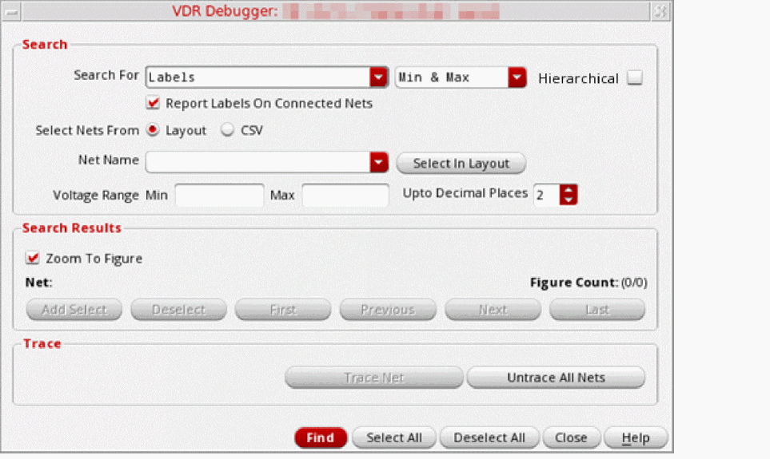 - Select Labels from the Search For drop-down list and specify one of the following:
- Select the Hierarchical check box to search for labels across complete hierarchy.
- Select the Report Labels On Connected Nets check box to list labels on the connected nets.
- From the Select Nets From options, specify whether you want to select nets from the layout or from a CSV file.
-
If you selected layout in step 5, specify the name of the net in the Net Name field manually or select the net from layout. If you leave this field blank, voltage labels are searched for all available nets in the layout or the CSV file.
-
If you selected CSV in step 5, specify the path to the CSV file in the File Name field or click Browse to select the CSV file. Click Load to load the CSV file.
Clicking Load automatically updates the Net Name field with the first net available in the CSV file. - In the Voltage Range fields, specify the minimum and maximum values of voltages.
-
In the Decimal Places field, specify the number of decimal places for net voltage labels.
You can specify any integer value between0–5. -
Click Find to search for the voltage labels.
An information message is printed in the CIW to indicate total number of VDR labels found for all nets or for the specified net.
The Search Results section in the VDR Debugger form is also updated with the total count of VDR labels found.
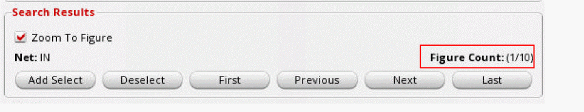 -
In the Search Results section, click the following commands:
- Zoom To Figure: To enable zooming on the selected voltage label.
- Next: To move to the next voltage label.
- Previous: To move to the previous voltage label.
- First: To directly move to the first voltage label.
- Last: To directly move to the last voltage label.
- Add Select: To add the voltage label to the currently selected set.
- Deselect: To remove the voltage label from the currently selected set.
- Click Close to close the form.
Related Topics
Searching VSync Shapes for Debugging
To search and display VSync shapes for debugging:
- Open the layout design in Layout XL.
-
Choose Tools – Voltage Dependent Rules – VDR Debugger from the layout window menu bar.
The VDR Debugger form opens.
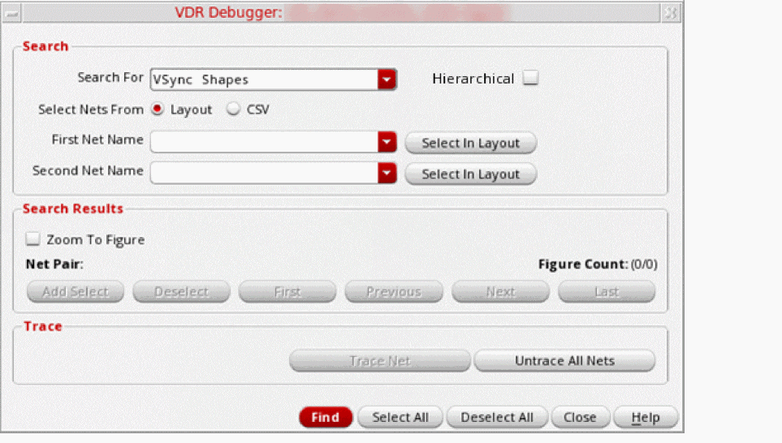 - Select VSync Shapes from the Search For drop-down list.
- Select the Hierarchical check box to search for VSync shapes across complete hierarchy.
- From the Select Nets From options, specify whether you want to select nets from the layout or from a CSV file.
- If you selected Layout in step 4, specify the name of the nets in the First Net Name and Second Net Name fields manually or select them from layout.
-
If you selected CSV in step 4, specify the path to the CSV file in the File Name field or click Browse to select the CSV file. Click Load to load the CSV file.
Clicking Load automatically updates the First Net Name and Second Net Name fields with the nets available in the CSV file. -
Click Find to search for the vsync shapes.
An information message is printed in the CIW to indicate total number of VSync shapes found for all nets or for the specified nets.
The Search Results section in the VDR Debugger form is also updated with the total count of VSync shapes found.

-
In the Search Results section, click the following commands:
- Zoom To Figure: To enable zooming on the selected VSync shape.
- Next: To move to the next VSync shape.
- Previous: To move to the previous VSync shape.
- First: To directly move to the first VSync shape.
- Last: To directly move to the last VSync shape.
- Add Select: To add the VSync shape to the currently selected set.
- Deselect: To remove the VSync shape from the currently selected set.
- In the Trace section, click Trace Net to display visualization of the connected nets.
- Click Untrace All Nets to remove visualization.
- Click Close to close the form.
Related Topics
Searching Userdv Shapes for Debugging
To search and display Userdv shapes for debugging:
- Open the layout design in Layout XL.
-
Choose Tools – Voltage Dependent Rules – VDR Debugger from the layout window menu bar.
The VDR Debugger form opens.
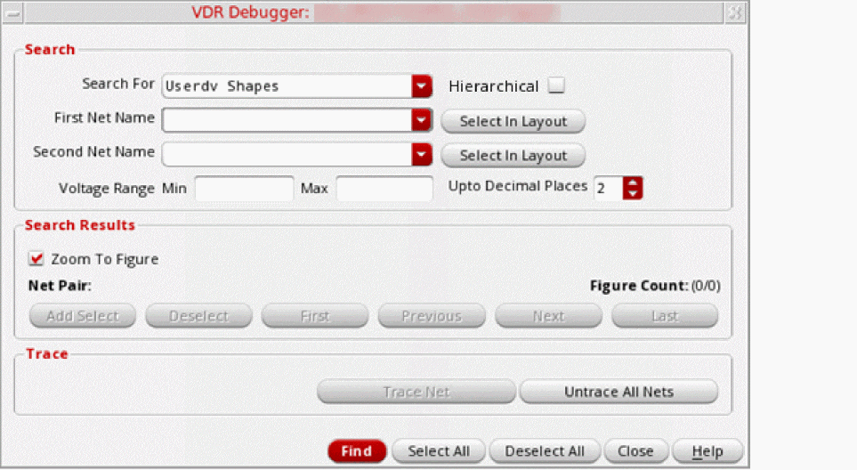 - Select Userdv Shapes from the Search For drop-down list.
- Select the Hierarchical check box to search for Userdv shapes across complete hierarchy.
-
Specify the name of the nets in the First Net Name and Second Net Name fields manually or select them from layout.
- If you leave both the fields blank, Userdv shapes are searched for all available nets in the layout.
- If you specify both the nets, only Userdv shapes that are associated with both the nets are searched.
- If you specify only one net, Userdv shapes that are associated with the specified net are searched.
- In the Voltage Range fields, specify the minimum and maximum values of voltages.
-
In the Decimal Places field, specify the number of decimal places for net voltage.
You can specify any integer value between0–5. -
Click Find to search for Userdv shapes.
An information message is printed in the CIW to indicate total number of Userdv shapes found for all nets or for the specified net.
The Search Results section in the VDR Debugger form is also updated with the total count of Userdv shapes found.

-
In the Search Results section, click the following commands:
- Zoom To Figure: To enable zooming on the selected Userdv shape.
- Next: To move to the next Userdv shape.
- Previous: To move to the previous Userdv shape.
- First: To directly move to the first Userdv shape.
- Last: To directly move to the last Userdv shape.
- Add Select: To add the Userdv shape to the currently selected set.
- Deselect: To remove the Userdv shape from the currently selected set.
- Click Close to close the form.
Related Topics
Rules for Creating Voltage Labels in Shared Cells
The rules for creating voltage labels inside the shared cells are as follows:
- For a shared cell, voltage labels are created for all internal nets across 32 hierarchy levels.
-
If a cell is not specified as the shared cell, voltage labels for nets are created as per the specified Hierarchy Stop Level. For example, if the Hierarchy Stop Level is set to
0, labels are created only for top-level nets. - Shared cells are considered only when they are instantiated on the current top level.
Example 1
If no shared cells are specified, voltage labels are created only top-level nets: NetA, NetB, NetC, NetD, NetE, NetF, and NetG.

Example 2
If Cell2 is specified as a shared cell and Hierarchy Stop Level is set to 0, voltage labels are created only top-level nets: NetA, NetB, NetC, NetD, NetE, NetF, NetG, and Cell2/Net_i2.
Note that voltage label is not created for the Cell3/Cell2/Net_i2. because Cell3 is not specified as a shared cell.
Example 3
If Cell3 is specified as a shared cell and Hierarchy Stop Level is set to 0, voltage labels are created only top-level nets: NetA, NetB, NetC, NetD, NetE, NetF, NetG, and Cell3/Net_i3, and Cell3/Cell2/Net_i2.
Note that voltage label is not created for the Cell2/Net_i2. because Cell2 is not specified as a shared cell.

Related Topics
vdrSharedCellListForInternalNetsOnly
Deleting VDR Objects
-
From the menu bar of Virtuoso Studio Layout Suite EXL or MXL, choose Tools – Voltage Dependent Rules – Delete VDR Objects.
The Delete VDR Objects form opens.
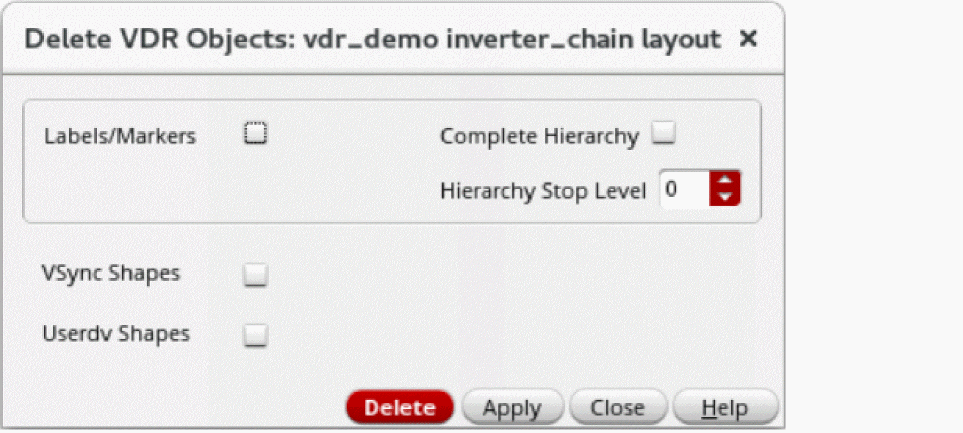 - Select the Labels/Markers check box if you want to delete voltage labels and voltage markers.
- Select the Complete Hierarchy check box if you want to delete voltage label and voltage markers across the complete hierarchy.
-
In the Hierarchy Stop Level field, specify the number of hierarchy levels up to which voltage labels and markers are deleted. The default value is
0, which indicates that voltage label and markers are deleted only for top-level nets. You can specify any integer value between0–32in this spin box. The maximum value32indicates that voltage labels and markers are deleted for all nets across32hierarchy levels. - Select the VSync Shapes check box if you want to delete VSync shapes.
- Select the Userdv Shapes check box if you want to delete the Userdv shapes.
- Click Delete to delete the selected VDR objects.
Return to top